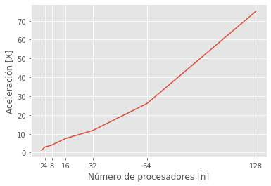
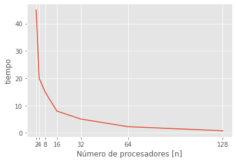
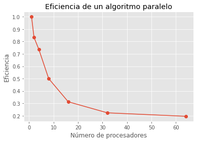
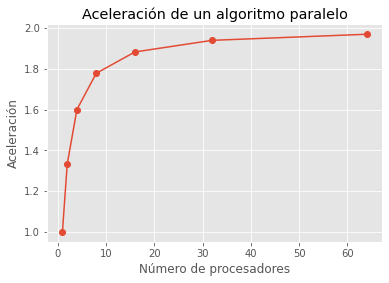
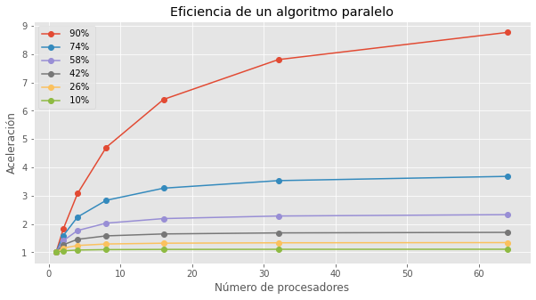
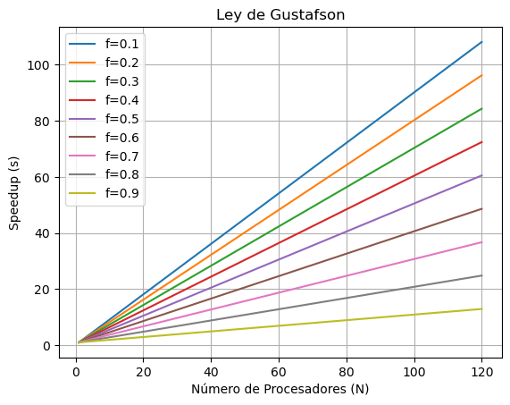

Medidas de desempeño#
En esta Clase vamos a repasar, de manera práctica, los conceptos de medidas de desempeño#
Tiempos de ejecución#
Es la métrica más sencilla, solo tenemos que calcular el tiempo desde que empieza a correr el programa hasta que termina.
import time
def funcion(tiempo: int):
time.sleep(tiempo)
inicio = time.time()
funcion(10)
fin = time.time()
print(f"El tiempo de ejecución del código es de {fin- inicio}")
# Podemos notar que el tiempo de ejecución es diferente a los que podríamos suponer.
# Aunque la funcion se va a dormir por 10 segundos, el programa tarda un tiempo más en enviar las instrucciones a la ALU para hacer el proceso.
El tiempo de ejecución del código es de 10.00997519493103
Aceleración#
Esta métrica mide la rapidéz con la que se ejecuta un algoritmo paralelo respecto a como se haría en (1 procesador).
Si tenemos un algoritmo que emplea 60 segundos en completar su ejecución con un solo procesador, cuanto es la aceleración del algoritmo si con 4 procesadores la realiza en 20 segundos.
t_1 = 60
t_4 = 20
Aceleracion = 60/20
print(f" La aceleración es de {Aceleracion} veces")
#La aceleración de un algoritmo es adimensional
La aceleración es de 3.0 veces
# Si tenemos los tiempos del algoritmo, ejecutado con diferentes procesadores
import numpy as np
import matplotlib.pyplot as plt
plt.style.use('ggplot')
n_cores = np.array([2,4,8,16,32,64,128])
t_paralelo = np.array([45,20,15,8,5.11,2.3,0.8])
# Miremos gráficamente el comportamiento.
acel = t_1 / t_paralelo
plt.plot(n_cores, acel)
plt.xticks(n_cores);
plt.ylabel("Aceleración [X]");
plt.xlabel("Número de procesadores [n]");
plt.figure()
plt.plot(n_cores, t_paralelo)
plt.xticks(n_cores);
plt.ylabel("tiempo");
plt.xlabel("Número de procesadores [n]");


Eficiencia#
Supongamos que tenemos un problema que se puede resolver en 100 segundos con un algoritmo secuencial. Queremos resolver el mismo problema utilizando un algoritmo paralelo en una computadora con 4 procesadores. Ejecutamos el algoritmo paralelo y medimos que tarda 25 segundos en completar.
import numpy as np
t_secuencial = 100
t_para = [100,60,34,25,20,14,8]
proc = np.array([1,2,4,8,16,32,64])
eficiencia = t_secuencial /(proc * t_para) ## Esta se deduce de la ecn de aceleración y eficiencia.
plt.plot(proc,eficiencia,'-o')
plt.xlabel('Número de procesadores')
plt.ylabel('Eficiencia')
plt.title('Eficiencia de un algoritmo paralelo')
plt.show()

Ley de Amdahl#
supongamos que tenemos un programa secuencial que tarda 1 hora en completarse, y que podemos paralelizar el 50% del código. Es decir, la mitad del programa se puede ejecutar en paralelo, mientras que la otra mitad sigue siendo secuencial. Si tenemos 8 procesadores disponibles para ejecutar el programa en paralelo, ¿cuál sería el tiempo de ejecución?
Para responder a esta pregunta, podemos utilizar la Ley de Amdahl y la siguiente fórmula:
\begin{align}{ {\huge Acel = \frac{1}{f_s + (\frac{f_p}{N})}} }\end{align}
Acá \(f_s\) es la fracción secuencial
Acá \(f_p\) es la fracción paralela
Acá \(N\) es la cantidad de procesadores
N = 8
frac_ser = 0.5
frac_par = 1 - frac_ser
acel = 1/(frac_ser +(frac_par/N))
acel
1.7777777777777777
#s=ts/tp;
#tp=ts/s
tp=60/1.7777
tp
33.751476627102434
## Ahora miremos el desempeño del algoritmo variando el número de procesadores
import numpy as np
N = np.array([1,2,4,8,16,32,64])
frac_ser = 0.5
frac_par = 1 - frac_ser
acel = 1/(frac_ser +(frac_par/N))
plt.plot(N,acel,'-o')
plt.xlabel('Número de procesadores')
plt.ylabel('Aceleración')
plt.title('Aceleración de un algoritmo paralelo')
plt.show()

# Miremos ahora si también se modifica el porcentaje de paralelización
N = np.array([1,2,4,8,16,32,64])
frac_sers = np.linspace(0.1, 0.9, 6)
plt.figure(figsize=(10,5))
for frac_ser in frac_sers:
frac_par = 1 - frac_ser
acel = 1/(frac_ser +(frac_par/N))
plt.plot(N,acel,'-o',label=' {:.0f}% '.format(frac_par*100))
plt.xlabel('Número de procesadores')
plt.ylabel('Aceleración')
plt.title('Eficiencia de un algoritmo paralelo')
plt.legend()
plt.show()

Ley de Gustafson#
Establece que cualquier problema suficientemente grande puede ser eficientemente paralelizado, ofrece un nuevo punto de vista y así una visión positiva de las ventajas del procesamiento paralelo. La ecuación \(s\) se define de la siguiente manera:
Donde:
\(f\) es el porcentaje en decimales de la parte secuencial.
\(N\) es la cantidad de procesadores.
import matplotlib.pyplot as plt
import numpy as np
# Valores de N (número de procesadores) de 1 a 120
N = np.arange(1, 121)
# Valores de f (fracción secuencial) desde 0.1 hasta 0.9
f_values = np.linspace(0.1, 0.9, 9)
# Crear un gráfico para cada valor de f
for f in f_values:
speedup = N - f * (N - 1)
plt.plot(N, speedup, label=f'f={f:.1f}')
# Configurar el gráfico
plt.xlabel('Número de Procesadores (N)')
plt.ylabel('Speedup (s)')
plt.title('Ley de Gustafson')
plt.legend()
plt.grid()
# Mostrar el gráfico
plt.show()

Ejercicio#
Establezca el porcentaje de paralelización de un algoritmo que tiene:
Aceleración = 2.3 X
Procesadores = 12
Pista: Utilice la Ley de Amdahl
### TU CÓDIGO VA AQUÍ
### HASTA AQUÍ
Ejercicio de Aceleraciones#
#@title Ejecute la siguente celda para importar los insumos del ejercicio
import time
t_secuencial = 60 #@param
t_paralelo = 5 #@param
t_exportdata = 3 #@param
def leerdata():
time.sleep(1)
def asignarMemoria():
time.sleep(1)
def copiarDatos():
time.sleep(1)
def kernelSecuencial(t:int=t_secuencial):
time.sleep(t)
def kernelParalelo(t:int=t_paralelo):
time.sleep(t)
def exportarDatos(t:int=t_exportdata):
time.sleep(t)
def liberarMemoria():
time.sleep(1)
Un proceso a bajo nivel de paralelización de un proceso consta de varias etapas en el siguiente orden:
Leer data en RAM de CPU
Asignar memoria en la GPU
Copiar datos de la RAM de CPU a RAM de GPU y cache
Ejecución de la tarea (paralelo o serial)
Exportar datos de la GPU a la CPU
Liberar memoria
Simulemos un proceso secuencial y un programa paralelizado
para eso pueden usar las siguientes funciones:
* leerdata()
* asignarMemoria()
* copiarDatos()
* kernelSecuencial()
* kernelParalelo()
* exportarDatos()
* liberarMemoria()
Teniendo estas funciones, arme dos casos, un proceso secuencial y un proceso paralelizado; luego realice la medición de los «breakdowns» y tiempos de ejecución del kernel.
Calcule la aceleración del programa paralelizado respecto al secuencial.
Calcule la fracción de código paralelo y no paralelo con respecto al tiempo.
Analice el comportamiento de la aceleración de todo el programa o de solo la parte de kernel. ¿Vale la pena la paralelización?
Vaya al formulario y multiplique el «t_exportdata» por 60. Realice los pasos anteriores en otra celda, analice los cambios y concluya sobre los resultados
### parte 1,2,3 - TU CÓDIGO VA ACÁ
### TU CÓDIGO TERMINA ACÁ
### parte 1,2,3 - TU CÓDIGO VA ACÁ
### TU CÓDIGO TERMINA ACÁ
print("La aceleracion de todo el codigo paralelo vs secuencial es:",...)
print("La fracción de codigo paralelo respecto al total:",...)
print("La fracción de codigo No paralelo respecto al total:",...)
print("La aceleracion de todo el codigo paralelo vs secuencial solo en el kernel es:",...)
### parte 4 - TU CÓDIGO VA ACÁ
### TU CÓDIGO TERMINA ACÁ
Ejercicio#
Usted ha sido contratado en una empresa de tecnología, y encuentra poca documentación sobre la infraestructura del cluster. Para un proceso de renovación usted debe conocer la operaciones x ciclo que tienen dos de sus computadores ya que debe dar de baja al de menor número de operaciones. Solo tiene la siguiente información:
Computador 1:
Vel_cpu = 3 GHz
n_cpus = 128 cores
Precisión de punto flotante = 32
TFlops = 49.152
Computador 2:
Vel_cpu = 3.5 GHz
n_cpus = 12 cores
Precisión de punto flotante = 64
TFlops = 5.376
Computador 3:
Vel_cpu = 2.5 GHz
n_cpus = 128 cores
Precisión de punto flotante = 64
TFlops = 40.96
Computador 4:
Vel_cpu = 3.5 GHz
n_cpus = 24 cores
Precisión de punto flotante = 32
TFlops = 10.752
programe una función para definir el computador con la menor cantidad de operaciones y menor potencia
### TU CÓDIGO VA AQUÍ
### HASTA AQUÍ
Conversión de punto flotante a binario con precisión simple y doble.#
Veamos un par de funciones usando librerias para la transformación de flotante a binario.
## Conversión a binario en precisión simple.
import struct
def float_to_binary32(num):
# Estructura IEEE 754 para float de 32 bits
s = struct.pack('>f', num)
# Convierte los 4 bytes a una secuencia binaria de 32 bits
bits = ''.join(['{0:08b}'.format(b) for b in s])
return bits
float_to_binary32(-3.6245)
'11000000011001111111011111001111'
## Conversión a binario en precisión doble.
import struct
def float_to_binary64(num):
# Estructura IEEE 754 para float de 64 bits
s = struct.pack('>d', num)
# Convierte los 8 bytes a una secuencia binaria de 64 bits
bits = ''.join(['{0:08b}'.format(b) for b in s])
return bits
float_to_binary64(-3.6245)
'1100000000001100111111101111100111011011001000101101000011100101'
Ejercicio#
Teniendo en cuenta el procedimiento visto en clase para convertir de punto flotante a binario, realice un script que implemente cada uno de los pasos a pedal, sin utilizar funciones como las vistas anteriormente.
### TU CODIGO VA AQUÍ
### HASTA AQUÍ